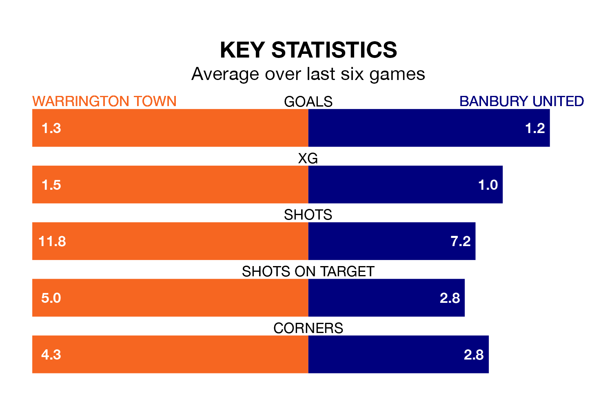

Banbury United travel to Cantilever Park for Saturday's match against Warrington Town looking to bounce back from defeat last time out in National League North and South.
Banbury, who sit zero in the league after 22 games, fell to a 4-1 home defeat to Chorley on Tuesday.
They face a Warrington side who secured a draw in their last match, a 0-0 tie with King's Lynn Town, and who sit 22nd in the table.
With 20 goals in 22 games so far this season, Banbury are the league's-21th-lowest scorers with 0.9 goals per game. And they are conceding more than average, letting in 33 goals at a rate of 1.5 per game.
Warrington, meanwhile, are average scorers, with 1.4 goals per game. They have conceded 1.3 goals per game.
Town are in mixed form in National League North and South, with two wins and two draws from their last six games.
With a win and two draws over that period, United's form is worse – they have taken five points from 18, compared to the hosts' eight.
Updated: 15:16, 21/12/23